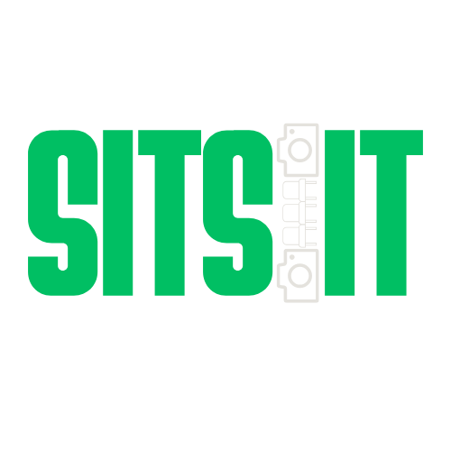

Home
About Us
Routes & Schedules
Seat Availability
Contact Us
Seat Availability
Available (Class ID: 1)
Occupied (Class ID: 0)
Unknown/Virtual (Class ID: 2)
Loading dynamic seat layout...
Morning Bus
Last Updated: --